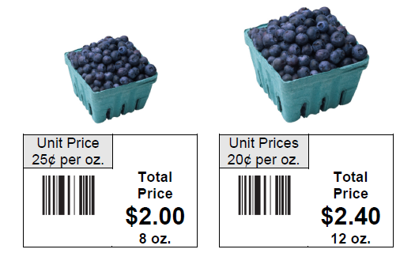

Chapter 2: The Language of Algebra
Section 2.5: Ratios and Rates
Learning Objective(s)
- Write ratios and rates as fractions in simplest form.
- Find unit rates.
- Find unit prices.
Introduction
Ratios are used to compare amounts or quantities or describe a relationship between two amounts or quantities. For example, a ratio might be used to describe the cost of a month's rent as compared to the income earned in one month. You may also use a ratio to compare the number of elephants to the total number of animals in a zoo, or the amount of calories per serving in two different brands of ice cream.
Rates are a special type of ratio used to describe a relationship between different units of measure, such as speed, wages, or prices. A car can be described as traveling 60 miles per hour; a landscaper might earn \(\$35\) per lawn mowed; gas may be sold at \(\$3\) per gallon.
Ratios
Ratios compare quantities using division. This means that you can set up a ratio between two quantities as a division expression between those same two quantities.
Here is an example. If you have a platter containing 10 sugar cookies and 20 chocolate chip cookies, you can compare the cookies using a ratio.
The ratio of sugar cookies to chocolate chip cookies is:
\[\frac{\text{sugar cookies}}{\text{chocolate chip cookies}} = \frac{10}{20}\]The ratio of chocolate chip cookies to sugar cookies is:
\[\frac{\text{chocolate chip cookies}}{\text{sugar cookies}} = \frac{20}{10}\]You can write the ratio using words, a fraction, or a colon:
Ratio of sugar cookies to chocolate chip cookies
10 to 20
\(\dfrac{10}{20}\)
10 : 20
Some people think about this ratio as: "For every 10 sugar cookies I have, I have 20 chocolate chip cookies."
You can also simplify the ratio just as you simplify a fraction:
\[\frac{10}{20} = \frac{10 \div 10}{20 \div 10} = \frac{1}{2}\]So we can also say:
Ratio of sugar cookies to chocolate chip cookies (simplified)
1 to 2
\(\dfrac{1}{2}\)
1 : 2
How to Write a Ratio
A ratio can be written in three different ways:
- With the word "to": 3 to 4
- As a fraction: \(\dfrac{3}{4}\)
- With a colon: 3 : 4
A ratio is simplified if it is equivalent to a fraction that has been fully simplified.
Example 1
A basketball player takes 50 jump shots during practice. She makes 28 of them. What is the ratio of shots made to shots taken? Simplify the ratio.
Solution
| Identify the relationship. | \(\dfrac{\text{shots made}}{\text{shots taken}}\) | |
| Write as a fraction. | \(\dfrac{28}{50}\) | Express the two quantities in fraction form. |
| Simplify. | \(\dfrac{28 \div 2}{50 \div 2} = \dfrac{14}{25}\) | Simplify the fraction to express the ratio in simplest form. |
| Answer | The ratio of shots made to shots taken is \(\dfrac{14}{25}\), 14 : 25, or 14 to 25. |
Example 2
Paul is comparing the amount of calories in a personal pizza to the calories in a sub sandwich. The pizza has 600 calories, while the sandwich has 450 calories. Write a ratio that represents the calories in the pizza compared to the calories in the sandwich.
Solution
| Identify the relationship. | \(\dfrac{\text{calories in the pizza}}{\text{calories in the sandwich}}\) | |
| Write as a fraction. | \(\dfrac{600}{450}\) | Write a ratio comparing calories. |
| Simplify. | \(\dfrac{600 \div 150}{450 \div 150} = \dfrac{4}{3}\) | 600 and 450 have a common factor of 150. |
| Answer | The ratio of calories in the pizza to calories in the sandwich is \(\dfrac{4}{3}\), 4 : 3, or 4 to 3. |
Ratios can compare a part to a part or a part to a whole. Consider the example below that describes guests at a party.
Example 3
Luisa invites a group of friends to a party. Including Luisa, there are a total of 22 people, 10 of whom are women. Which is greater: the ratio of women to men at the party, or the ratio of women to the total number of people present?
Solution
| Identify the first relationship. | \(\dfrac{\text{number of women}}{\text{number of men}}\) | |
| Write as a fraction. | \(\dfrac{10}{12}\) | Since there are 22 people and 10 are women, 12 must be men. |
| Simplify. | \(\dfrac{10 \div 2}{12 \div 2} = \dfrac{5}{6}\) | 10 and 12 have a common factor of 2. The ratio of women to men is \(\dfrac{5}{6}\). |
| Identify the next relationship. | \(\dfrac{\text{number of women}}{\text{total number of people}}\) | |
| Write as a fraction. | \(\dfrac{10}{22}\) | Write a ratio comparing women to the total number of people at the party. |
| Simplify. | \(\dfrac{10 \div 2}{22 \div 2} = \dfrac{5}{11}\) | 10 and 22 have a common factor of 2. |
| Compare. | \(\dfrac{5 \cdot 11}{6 \cdot 11} = \dfrac{55}{66} \qquad \dfrac{5 \cdot 6}{11 \cdot 6} = \dfrac{30}{66}\) | Rewrite each fraction with a common denominator of 66. |
| \(\dfrac{5}{6} > \dfrac{5}{11}\) | Since \(\dfrac{55}{66} > \dfrac{30}{66}\). | |
| Answer | The ratio of women to men at the party, \(\dfrac{5}{6}\), is greater than the ratio of women to the total number of people, \(\dfrac{5}{11}\). |
Self Check A
A poll at Forrester University found that 4,000 out of 6,000 students are unmarried. Find the ratio of unmarried to married students. Express as a simplified ratio.
If 4,000 students out of 6,000 are unmarried, then \(6{,}000 - 4{,}000 = 2{,}000\) must be married. The ratio of unmarried to married students is:
\[\frac{4{,}000}{2{,}000} = \frac{4{,}000 \div 2{,}000}{2{,}000 \div 2{,}000} = \frac{2}{1}\]The ratio of unmarried to married students is 2 to 1.
Rates
A rate is a ratio that compares two different quantities that have different units of measure. A rate provides information such as dollars per hour, feet per second, miles per hour, and dollars per quart. The word "per" usually indicates you are dealing with a rate. Rates can be written using words, using a colon, or as a fraction — and you must include the units.
For example, an employer wants to rent 6 buses to transport a group of 300 people on a company outing. The rate can be written as:
six buses per 300 people
6 buses : 300 people
\(\dfrac{6 \text{ buses}}{300 \text{ people}}\)
As with ratios, this rate can be expressed in simplest form by simplifying the fraction:
\[\frac{6 \text{ buses}}{300 \text{ people}} = \frac{6 \div 6 \text{ buses}}{300 \div 6 \text{ people}} = \frac{1 \text{ bus}}{50 \text{ people}}\]This means the rate of buses to people is 1 bus for every 50 people.
Example 4
Write the rate as a simplified fraction: 8 phone lines for 36 employees.
Solution
| Write as a fraction. | \(\dfrac{8 \text{ phone lines}}{36 \text{ employees}}\) | |
| Simplify. | \(\dfrac{8 \div 4 \text{ phone lines}}{36 \div 4 \text{ employees}} = \dfrac{2 \text{ phone lines}}{9 \text{ employees}}\) | Simplify the fraction using the common factor of 4. |
| Answer | The rate of phone lines for employees is \(\dfrac{2 \text{ phone lines}}{9 \text{ employees}}\). |
Example 5
Write the rate as a simplified fraction: 6 flight attendants for 200 passengers.
Solution
| Write as a fraction. | \(\dfrac{6 \text{ flight attendants}}{200 \text{ passengers}}\) | |
| Simplify. | \(\dfrac{6 \div 2 \text{ flight attendants}}{200 \div 2 \text{ passengers}} = \dfrac{3 \text{ flight attendants}}{100 \text{ passengers}}\) | Simplify the fraction using the common factor of 2. |
| Answer | The rate of flight attendants to passengers is \(\dfrac{3 \text{ flight attendants}}{100 \text{ passengers}}\). |
Self Check B
Anyla rides her bike 18 blocks in 20 minutes. Express her rate as a simplified fraction.
Anyla's trip compares quantities with different units (blocks and minutes), so it is a rate:
\[\frac{18 \text{ blocks}}{20 \text{ minutes}} = \frac{18 \div 2 \text{ blocks}}{20 \div 2 \text{ minutes}} = \frac{9 \text{ blocks}}{10 \text{ minutes}}\]Finding Unit Rates
A unit rate compares a quantity to one unit of measure. You often see the speed at which an object is traveling expressed as a unit rate.
For example, if you wanted to describe the speed of a boy riding his bike — and you had the distance he traveled in 2 hours — you would express the speed as the distance traveled per one hour. The denominator of a unit rate will always be one.
Consider a car that travels 300 miles in 5 hours. To find the unit rate:
\[\frac{300 \text{ miles}}{5 \text{ hours}} = \frac{300 \div 5 \text{ miles}}{5 \div 5 \text{ hours}} = \frac{60 \text{ miles}}{1 \text{ hour}}\]A common way to write this unit rate is 60 miles per hour.
Example 6
A crowded subway train has 375 passengers distributed evenly among 5 cars. What is the unit rate of passengers per subway car?
Solution
| Identify the relationship. | \(\dfrac{\text{passengers}}{\text{subway cars}}\) | |
| Write as a fraction. | \(\dfrac{375 \text{ passengers}}{5 \text{ subway cars}}\) | |
| Find unit rate. | \(\dfrac{375 \div 5 \text{ passengers}}{5 \div 5 \text{ subway cars}} = \dfrac{75 \text{ passengers}}{1 \text{ subway car}}\) | Express the fraction with 1 in the denominator to find the number of passengers in one subway car. |
| Answer | The unit rate is 75 riders per subway car. |
Finding Unit Prices
A unit price is a unit rate that expresses the price of something. The unit price always describes the price of one unit, so that you can easily compare prices.
You may have noticed that grocery shelves are marked with the unit price (as well as the total price) of each product. This unit price makes it easy for shoppers to compare the prices of competing brands and different package sizes.
Consider the two containers of blueberries shown below. It might be difficult to decide which is the better buy just by looking at the prices; the container on the left is cheaper, but you also get fewer blueberries. A better indicator of value is the price per single ounce of blueberries for each container.

The container on the right is actually a better deal, since its price per ounce is lower. You pay more money for the larger container, but you also get more blueberries. Put simply, the container on the right is a better value.
To find a unit price, divide the total price by the number of units. Like rates, unit prices are often described with the word "per" or a slanted line /. For example, \(\$1.60\)/box is read "\(\$1.60\) per box."
Example 7
3 pounds of sirloin tips cost \(\$21\). What is the unit price per pound?
Solution
| Write as a fraction. | \(\dfrac{\$21.00}{3 \text{ pounds}}\) | Write a rate to represent the cost per number of pounds. |
| Find unit price. | \(\dfrac{\$21.00 \div 3}{3 \div 3 \text{ pounds}} = \dfrac{\$7.00}{1 \text{ pound}}\) | Divide both numerator and denominator by 3 to get the price of 1 pound. |
| Answer | The unit price of the sirloin tips is \(\$7.00\)/pound. |
Example 8
Sami is trying to decide between two brands of crackers. Which brand has the lower unit price?
- Brand A: \(\$1.12\) for 8 ounces
- Brand B: \(\$1.56\) for 12 ounces
Solution
| Brand A — write as a fraction. | \(\dfrac{\$1.12}{8 \text{ ounces}}\) | Write a rate to represent the cost per ounce for Brand A. |
| Brand A — find unit price. | \(\dfrac{\$1.12 \div 8}{8 \div 8 \text{ ounces}} = \dfrac{\$0.14}{1 \text{ ounce}}\) | Divide numerator and denominator by 8. |
| Brand B — write as a fraction. | \(\dfrac{\$1.56}{12 \text{ ounces}}\) | Write a rate to represent the cost per ounce for Brand B. |
| Brand B — find unit price. | \(\dfrac{\$1.56 \div 12}{12 \div 12 \text{ ounces}} = \dfrac{\$0.13}{1 \text{ ounce}}\) | Divide numerator and denominator by 12. |
| Compare. | \(\dfrac{\$0.14}{1 \text{ oz}} > \dfrac{\$0.13}{1 \text{ oz}}\) | Brand B has the lower unit price. |
| Answer | Brand A costs 14 cents/ounce; Brand B costs 13 cents/ounce. Brand B has the lower unit price and is the better value. |
Self Check C
A shopper is comparing two packages of rice at the grocery store. A 10-pound package costs \(\$9.89\) and a 2-pound package costs \(\$1.90\). Which package has the lower unit price to the nearest cent? What is its unit price?
Unit price of the 2-pound bag: \(\$1.90 \div 2 = \$0.95\) per pound.
Unit price of the 10-pound bag: \(\$9.89 \div 10 = \$0.989 \approx \$0.99\) per pound.
The 2-pound bag has the lower unit price of \(\$0.95\)/pound.
Summary
Ratios and rates are used to compare quantities and express relationships between quantities measured in the same units and in different units of measure. Both can be written as a fraction, using a colon, or using the words "to" or "per." Since rates compare two quantities measured in different units of measurement, they must include their units. A unit rate or unit price is a rate that describes the rate or price for one unit of measure.